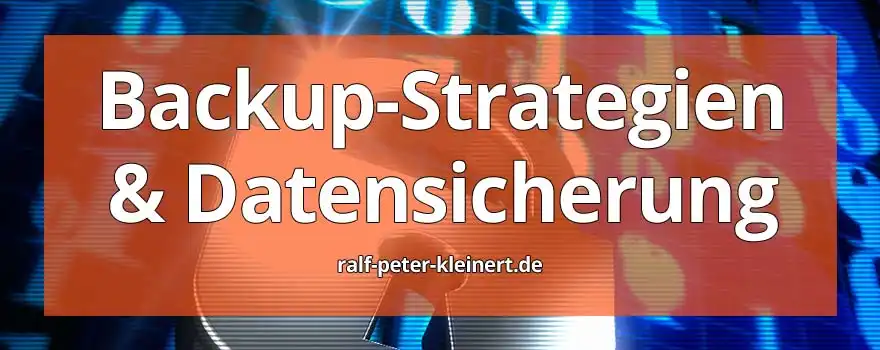
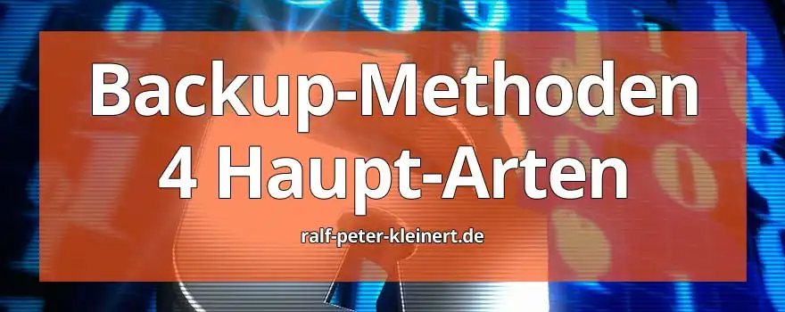

Für Nutzer und Nutzerinnen von Computern und in der IT im Allgemeinen existieren viele Gefahren, welche die Daten auf den Geräten bedrohen. Das gilt für alle Geräte, die Daten verarbeiten. Das Thema ist riesig, und auch ich habe mir Gedanken gemacht und mich gefragt: 'Wo soll ich nur anfangen, wenn ich meinen Lesern etwas über IT- und Computersicherheit erzählen will?'
Nachdem ich überlegt habe, wo die wichtigsten Daten verarbeitet werden, bin ich ganz klar beim klassischen PC und beim Laptop angekommen. Es stimmt, dass das mobile Internet immer weiter wächst, doch es ist immer noch so, dass Uni-Arbeiten am Laptop, Briefe und Korrespondenzen in der Textverarbeitung am PC und Bilder und Videos vom Handy auf dem Rechner gespeichert werden.
Für mich ist klar: Im Jahr 2024 werden bei Privatpersonen und in Unternehmen die meisten und wichtigsten Daten noch immer auf dem PC, also dem Personal Computer, bearbeitet und gespeichert. Daher benötigen diese Geräte erhöhte Aufmerksamkeit. Denn es gibt fast nichts Schlimmeres, als den oft über viele Jahre angewachsenen Datenbestand aus welchem Grund auch immer zu verlieren.
Eine gute Datensicherung ist im Desasterfall die Rettung in der Not - für das sogenannte Desaster-Recovery, die Katastrophen-Wiederherstellung. Vielmehr ist die Datensicherung, die mittels einer guten Backupstrategie und anhand eines guten Datensicherungskonzepts erstellt wurde. Hier erkläre ich Schritt für Schritt, wie ein Datensicherungskonzept aussehen kann oder sollte. Die Grundlage meines Wissens bildet CompTIA Security+ SYO-601. Es ist am Ende jeder Nutzerin oder jedem Nutzer selbst überlassen, ob sie die allgemein geschulten Strategien anpasst oder einfach übernimmt. Ich präsentiere hier in der IT-Sicherheit allgemein gebräuchliche Lösungsansätze und mit diesen lassen sich Datensicherung und Backup nach CompTIA Security+ realisieren. So erhöhen sie die Sicherheit Ihrer Daten enorm.
Im Bereich der professionellen Datensicherung hat sich der Ansatz der sogenannten sieben W Fragen durchgesetzt, die man bei der Aufstellung eines Backupkonzepts beantworten sollte.
Diese sieben W-Fragen werden wir jetzt nach und nach durchgehen. Wenn hier die Antworten feststehen, haben Sie eine sehr solide Grundlage für eine Backupstrategie. Gleich ob im privaten oder geschäftlichen Bereich. Das Wichtigste, was ich mit diesem Artikel aber erreichen will, ist, dass Sie ein Verständnis entwickeln und erkennen, wie wichtig dieses Thema ist. Und wenn man das Thema Datensicherung so aufbereitet vor sich sieht, dann erkennt man viel leichter, warum es so wichtig ist.
Kostenlose IT-Sicherheits-Bücher & Information via Newsletter
Bleiben Sie informiert, wann es meine Bücher kostenlos in einer Aktion gibt: Mit meinem Newsletter erfahren Sie viermal im Jahr von Aktionen auf Amazon und anderen Plattformen, bei denen meine IT-Sicherheits-Bücher gratis erhältlich sind. Sie verpassen keine Gelegenheit und erhalten zusätzlich hilfreiche Tipps zur IT-Sicherheit. Der Newsletter ist kostenlos und unverbindlich – einfach abonnieren und profitieren!
Was soll gesichert werden? Welche Daten sollen in das Backup aufgenommen werden?
Die Frage kann auch anders formuliert werden: Welche Daten soll ich sichern? Oder: Welche Daten müssen in ein Backup? Bilder, Dokumente, Texte oder Datenbanken? E-Mails oder das gesamte System? Einzelne Ordner oder ganze Festplatten? Webseiten, Videos und Systemeinstellungen? Sie sehen, auch hier kann man sich wieder Gedanken machen, welche Daten sind wichtig, welche Daten sind sogar extrem wichtig, wie zum Beispiel Versicherungsverträge oder Kontoauszüge.
Es ist wichtig, darüber Bescheid zu wissen, welche Daten unbedingt gesichert werden müssen. Daher ist es ratsam, sich zuerst darüber Gedanken zu machen. Bei einem privaten PC ist das in der Regel noch gut überschaubar.
Aber sobald man im geschäftlichen Bereich darüber nachdenkt, wo vielleicht 3, 4 oder sogar 20 oder noch mehr Computer genutzt werden, kommt man um eine schriftliche Bestandsanalyse nicht mehr herum. Eine Daten-Inventur, wenn man so will. Es muss klar sein, welche Daten gesichert werden müssen.
Als Beispiel kann man anführen: Wenn sie auf ihrem Rechner verschiedene Programme installiert haben, wie Videoschnittprogramme, Grafikbearbeitungssoftware, E-Mail-Software mit eingebundenen Konten, lizenzierte Programme, und das Wiederaufsetzen des Systems länger dauern würde als eine Rücksicherung - empfiehlt sich hier ein Image-Backup der Systemfestplatte. Es kann sehr viel Zeit in Anspruch nehmen, alle Programme zusammenzusuchen, und dann noch die entsprechenden Serien- und Lizenznummern. Dann die Konfiguration der Programme. Hier kann das Programm Paragon Backup 17 CE gute Dienste leisten.
Wann sollen die Daten gesichert werden?
Wenn der Computer so eingerichtet ist, dass er zu einer Zeit, an der Sie in der Regel mit dem Gerät arbeiten, ein Voll-Backup ausstößt, kann und wird sich das natürlich auf die Leistung des PCs auswirken. Wenn über das Netzwerk auf einen Server oder NAS (Network Attached Storage, Netzwerkspeicher) gesichert wird, dann wird sich das auch auf die Netzwerkleistung auswirken.
Sollten Sie also ein zeitlich und automatisch gesteuertes Backup wünschen, sollten Sie sich auch Gedanken darüber machen, zu welcher Zeit die Datensicherung gestartet werden soll.
Download von Iperius und Paragon Backupsoftware
Beide Programme können kostenlos heruntergeladen und genutzt werden. Nach der Installation sind beide Programme sehr einfach zu bedienen, für die Einrichtung werden sie gut durch die Programme geführt und alles ist gut erklärt.
Download: Paragon Backup und Recovery Datensicherungsprogramm
Wie oft sollen oder müssen die Daten gesichert werden?
Auch diese Frage müssen Sie sich beantworten. Wenn Sie z.B. viele Dokumente am PC bearbeiten und in einer Stunde auf 20 Briefe antworten oder Bilder bearbeiten und in einer Stunde 30 Bilder einer Farbkorrektur unterziehen, macht es durchaus Sinn, eine höhere Sicherungsfrequenz für diese Datei-Ordner anzusetzen. Stellen Sie sich auch die Frage: Wie viele Daten, Dateien oder Arbeitsschritte gehen Ihnen im Fehlerfall eines Laufwerks verloren? Wie viel Verlust von Daten können Sie verkraften? Haben Sie Daten, die permanent geändert werden, wie Datenbanken? Wenn Sie wissen, wie oft sich die Daten in Ihrem System verändern, wissen Sie auch, wie oft Sie die Daten sichern sollten.
Beispiel: Wenn Sie einmal am Tag um 16 Uhr eine Sicherung ihrer Daten machen und die Festplatte geht um 15 Uhr kaputt, dann verlieren Sie 23 Stunden zurückliegende Daten - eben bis 16 Uhr am Vortag. Sie müssen selbst wissen, ob Sie damit leben können. Im Privatbereich kann man einfach sagen: Kann ich. Im Geschäftsbereich gibt der Gesetzgeber vor, wie lange Sie, welche Daten speichern müssen.
Wie viele Daten sollten gesichert werden?
Als Ausgangspunkt ist hier der verfügbare Speicherplatz zu nennen. Wenn Sie wissen, wie viel Speicher Sie zur Datensicherung zur Verfügung haben, können Sie auf dieser Basis entscheiden, wie viele Daten gesichert werden. Haben Sie ein Sicherungslaufwerk von 4 TB Größe und einen PC mit einer 1 TB Festplatte, können Sie nicht sagen: Ich will 30 Tage rückwirkend Vollbackup für den Notfall haben. Das ginge nur mit einem mindestens 30 TB Sicherungslaufwerk.
Am Ende entscheidet der verfügbare Speicherplatz über die Art der Sicherung (Vollbackup, inkrementelles Backup oder differenzielles Backup),
die Menge an Sicherungspunkten (Tage / Wochen / Monate / Jahre
rückwirkend) und die Häufigkeit der Sicherung (stündlich / täglich /
wöchentlich). Sicherungsstrategien, die über die Kapazität der
Speichereinheit hinausgehen, funktionieren natürlich nicht.
Für Privatpersonen stellt sich die Frage, wie lange man auf einen zurückliegenden Datenstand zurückgreifen können möchte.
In einem Unternehmen ist es einmal eine Frage des sogenannten Datenhaltungskonzeptes, zum anderen wie viele Mitarbeitende im Unternehmen sind, wie viele PCs vorhanden sind, also wie hoch die Fehler-Quellen-Quote ist. Ein Unternehmen sollte zumindest eine Regel aufstellen, wie weit man zurückgehen können muss, wenn es noch an einem Datenhaltungskonzept fehlt.
Beispiel 1: Frau Müller löscht eine E-Mail und ein Dokument, stellt aber erst 4 Tage später fest, dass dies ein Fehler war. Oder es wird erst in 4 Wochen bemerkt.
Beispiel 2: Der Onlineshop, der permanent Bestellungen entgegennimmt, wird nicht richtig gesichert, und es liegt plötzlich ein Fehler vor. In einem solchen Fall bietet sich eine Sicherung pro Stunde an oder eine noch höhere Sicherungsfrequenz. Solche Daten zu verlieren, kann großen Schaden anrichten.
Wer ist für Backups und Sicherungen, deren Verwaltung und im Fehlerfall für die Wiederherstellung verantwortlich?
Im privaten Bereich ist eigentlich immer klar, wer verantwortlich ist. Sie richten als Privatperson das Backup ein, wissen, wo es gespeichert ist, und Sie wissen auch, wann die Notwendigkeit besteht, ein Backup wiederherzustellen.
Im unternehmerischen Bereich wird es dann schon etwas komplizierter. Hier müssen die Zuständigkeiten ganz klar definiert sein. Das Unternehmen muss jederzeit wissen, wer verantwortlich ist und wer Zugriff auf die Datensicherungen hat. Die zuständigen Personen müssen jederzeit benannt werden können. Bei Ausscheiden des jeweiligen Mitarbeiters müssen diese Berechtigungen auch wieder entzogen werden, und auch Zugänge zu den Backups müssen dann entzogen werden. Hier muss ein Unternehmen ganz genaue Richtlinien aufstellen - denn die Backups enthalten unternehmenskritische Daten und natürlich auch Kundendaten (Stichwort Datenschutz und DSGVO). Die Verantwortlichkeiten müssen klar definiert, geschützt und geprüft werden. Das Unternehmen muss jederzeit umfänglich im Bilde sein, wer Datensicherungen macht, wer diese auf Vollständigkeit und Funktion prüft, wer sie löschen darf, wer Zugang hat.
Wie sollen die Daten gesichert werden? Diese Frage lässt sich nur richtig beantworten, wenn man vorher weiß, wie viele Daten gesichert werden müssen, wie groß diese Daten sind, wie lange die Daten aufbewahrt werden müssen, und wie schnell der Sicherungsvorgang vonstattengehen muss. 1 TB Daten auf DVD zu brennen wird eher nicht als optimale Lösung angesehen. 6 TB Daten über USB auf eine externe Festplatte zu sichern, nimmt auch sehr viel Zeit in Anspruch. Hierzu folgende Punkte:
Ein weiterer Punkt unter Wie? ist auch, wie die Datensicherung durchgeführt wird. Soll hierfür eine spezielle Backup-Software, wie Iperius Backup verwendet werden? Soll eine spezielle Betriebssystemumgebung als Backupserver verwendet werden? Sollen die Sicherungen eventuell manuell durch Kopieren durchgeführt werden? Hier ist auch der Bedarf an einer Automatisierung nach Zeitplänen zu berücksichtigen.
Wie soll verfahren werden, wenn ein Sicherungslaufwerk in die Knie geht, eine Sicherung nicht fertiggestellt werden kann? Wie wird geprüft und nach welchen Kriterien, ob Sicherungen vollständig und funktional sind? Die Wie-Fragen helfen, die richtige Strategie und Software zu ermitteln.
Wo werden Backups am besten gespeichert?
Das ist eine entscheidende Frage. Hier müssen die Sicherheit, die Datensicherheit, die Verfügbarkeit der Backups und der Datenschutz streng beachtet werden.
Backups auf einen eigens dafür eingerichteten Backupserver sind eine tolle Sache, wenn der Server an einem sicheren Standort steht. Es sollte auf Feuerschutz, Wasserschadenschutz, Diebstahl- und Einbruchschutz geachtet werden. Der Server darf nur von autorisierten Personen erreichbar sein, physisch und über Anbindung. Es sollte auch nicht über Ordnerfreigaben gesichert werden, sondern eine Backupsoftware mit Netzwerk-Konto Zugriff, oder über FTP Konto oder Ähnliches gesichert werden. Malware oder ein Virus darf vom Ausgangs-PC keine Netzwerkordner des Backup-Servers erreichen.
Soll auf externe Festplatten gesichert werden, müssen diese sicher weggeschlossen werden können, und auf diesen Schrank, besser Tresor, dürfen nur autorisierte Personen Zugriff haben.
Werden Sicherungen ausgelagert, z.B. in einen Cloud-Dienst, dann müssen
hier natürlich weitere Maßnahmen zur Sicherung des Cloud-Dienstes selbst
ins Auge gefasst werden. Ich empfehle, eine eigene Cloud-Struktur
aufzubauen und die Daten nicht an ein großes Mainstream-Unternehmen wie
Amazon oder Microsoft zu übertragen.
Die Frage Wo? ist sehr wichtig. Es hilft nicht, wenn ein Backup benötigt wird und keiner weiß, wo es gespeichert ist.
Sie sehen anhand der 7 W-Fragen, dass Datensicherung und Backup ein komplexes Thema ist. Wenn Sie diese sieben W-Fragen beantworten und dann zu den Antworten Regeln aufstellen, diese Regeln Frage für Frage schriftlich ausformulieren und fertig sind, können Sie dieses Regelwerk ausdrucken. Dann benötigen Sie nur noch ein Deckblatt, auf dem steht: Datensicherungs-Konzept.
Wenn Sie Ihr Datensicherungskonzept ausgearbeitet haben, bedenken Sie, dieses immer wieder zu prüfen, zu erweitern und anzupassen. Versuchen Sie, die Fragen so zu beantworten, das Konzept so zu formulieren, dass, wenn Sie es einem neuen IT-Techniker in die Hand geben, er ohne weitere Erläuterung in der Lage ist, Backups zu erstellen, zurückzuspielen oder zu wissen, wie in Ihrem Unternehmen verfahren wird.
Tiefergehende Informationen: Backupprogramme
Bitte lesen sie auch meine Artikel zu den beiden vorgestellten Backupprogrammen Iperius und Paragon. Backups sind ihre Versicherung, wenn es einen digitalen Schadenfall gibt - es ist einfach und unkompliziert - aber extrem wichtig.

Es gibt 4 klassische Backupverfahren, welche von Backupprogrammen angewendet werden können. Diese 4 Verfahren sind die geläufigsten.
Die Sicherung von Daten ist ein entscheidender Aspekt der Informationstechnologie, um Geschäftskontinuität und Datenintegrität zu gewährleisten. Ein Vollbackup ist eine der grundlegenden Methoden der Datensicherung und spielt eine Schlüsselrolle in dieser Strategie.
Was ist ein Vollbackup?
Ein Vollbackup bezeichnet die Sicherung aller ausgewählten Daten und Dateien auf einem Speichermedium. Anders als inkrementelle oder differentielle Backups, die nur geänderte oder hinzugefügte Daten speichern, um Zeit und Speicherplatz zu sparen, erfasst ein Vollbackup die gesamte Datenmenge. Dies umfasst Betriebssystemdateien, Anwendungen, Benutzerdaten und alle anderen relevanten Informationen.
Warum ist ein Vollbackup wichtig?
1. Umfassende Sicherung: Ein Vollbackup stellt sicher, dass sämtliche Daten gesichert werden. Dies ist besonders wichtig bei der Wiederherstellung nach einem vollständigen Datenverlust, sei es aufgrund von Hardwarefehlern, Cyberangriffen oder menschlichem Versagen.
2. Unabhängigkeit von anderen Backups: Vollbackups dienen oft als Basis für andere Backup-Methoden. Inkrementelle oder differentielle Backups können auf einem vorherigen Vollbackup aufbauen, was die Wiederherstellungsprozesse effizienter macht.
3. Schnelle Wiederherstellung: Im Falle eines Datenverlusts kann ein Vollbackup die Wiederherstellungszeit verkürzen. Es eliminiert die Notwendigkeit, mehrere inkrementelle oder differentielle Backups sequenziell wiederherzustellen, da alle Daten in einem einzigen Backup vorhanden sind.
Best Practices, (Empfohlene Vorgehensweise) für Vollbackups
1. Regelmäßige Durchführung: Vollbackups sollten regelmäßig gemäß den Geschäftsanforderungen durchgeführt werden, um sicherzustellen, dass alle aktuellen Daten gesichert sind.
2. Sicherer Speicherort: Die Backup-Daten sollten an einem sicheren Ort aufbewahrt werden, vorzugsweise außerhalb des primären Standorts, um gegen Katastrophen geschützt zu sein.
3. Verschlüsselung: Es ist entscheidend, die Sicherheit der gesicherten Daten zu gewährleisten. Verschlüsselung sollte angewendet werden, insbesondere wenn Backups auf externen Medien oder in der Cloud gespeichert werden.
Ein Vollbackup bildet das Rückgrat einer umfassenden Datensicherungsstrategie. Es schafft die Grundlage für den Schutz vor Datenverlusten und stellt sicher, dass Organisationen im Falle unvorhergesehener Ereignisse schnell wieder betriebsbereit sind. Die Integration von Vollbackups in eine ganzheitliche Sicherheitsstrategie ist unerlässlich, um die Integrität und Verfügbarkeit von Daten zu gewährleisten.
Das inkrementelle Backup ist eine gute Backupart, um effizient zu sichern und Speicherplatz optimal zu nutzen. Lassen Sie uns einen Blick darauf werfen, was ein inkrementelles Backup ist und warum es in der Welt der IT-Sicherheit von großer Bedeutung ist.
Was ist ein inkrementelles Backup?
Ein inkrementelles Backup ist eine Methode der Datensicherung, die sich auf die Sicherung nur der seit dem letzten Backup geänderten oder hinzugefügten Daten konzentriert. Im Gegensatz zum Vollbackup, das alle ausgewählten Daten sichert, identifiziert das inkrementelle Backup nur die Veränderungen seit dem letzten Backup.
Warum ist ein inkrementelles Backup wichtig?
1. Speicherplatzoptimierung: Durch die Sicherung nur geänderter Daten spart das inkrementelle Backup erheblich Speicherplatz im Vergleich zu Vollbackups. Dies ermöglicht eine effiziente Nutzung von Ressourcen.
2. Zeitersparnis: Da nur die neuesten Änderungen gesichert werden, ist die Durchführung eines inkrementellen Backups in der Regel schneller als ein Vollbackup. Dies minimiert die Ausfallzeit während des Sicherungsvorgangs.
3. Ressourcenschonung: Die geringere Menge an zu sichernden Daten bedeutet auch weniger Ressourcenbelastung für die Backup-Infrastruktur, was insbesondere in großen Umgebungen von Vorteil ist.
Best Practices, (Empfohlene Vorgehensweise) für inkrementelle Backups
1. Regelmäßige Durchführung: Inkrementelle Backups sollten regelmäßig durchgeführt werden, abhängig von den geschäftlichen Anforderungen und der Häufigkeit von Änderungen an den Daten.
2. Vollbackup als Basis: Ein inkrementelles Backup baut oft auf einem vorangegangenen Vollbackup auf. Es ist wichtig, sicherzustellen, dass regelmäßig Vollbackups durchgeführt werden, um eine konsistente Sicherungsbasis zu haben.
3. Überwachung und Prüfung: Überwachen Sie den Status und die Integrität der inkrementellen Backups sorgfältig. Regelmäßige Prüfungen stellen sicher, dass im Bedarfsfall eine reibungslose Wiederherstellung möglich ist.
Inkrementelle Backups bieten eine schlanke und effiziente Methode zur Datensicherung, wodurch sowohl Speicherplatz als auch Zeit gespart werden. Die Integration von inkrementellen Backups in eine umfassende Sicherungsstrategie ist entscheidend, um den stetig wachsenden Anforderungen an Datenintegrität und Verfügbarkeit gerecht zu werden.
In der Welt der Datensicherung spielt das differentielle Backup eine bedeutende Rolle, um eine ausgewogene Balance zwischen Effizienz und, oft sehr wichtig, der Wiederherstellungsgeschwindigkeit zu schaffen. Werfen wir einen detaillierten Blick darauf, was ein differentielles Backup ist und warum es eine wichtige Rolle in der IT-Sicherheit spielt.
Warum ist ein differentielles Backup wichtig?
1. Effiziente Datensicherung: Durch die Sicherung aller seit dem letzten Vollbackup durchgeführten Änderungen ermöglicht das differentielle Backup eine effiziente und vollständige Datensicherung.
2. Schnelle Wiederherstellung: Im Falle eines Datenverlusts minimiert das differentielle Backup die Wiederherstellungszeit, da nur das letzte Vollbackup und das letzte differentielle Backup benötigt werden, um alle Änderungen seit dem Vollbackup wiederherzustellen.
3. Optimale Ressourcennutzung: Da das differentielle Backup im Vergleich zu Vollbackups weniger Daten sichert, spart es Speicherplatz und Ressourcen. Dies ist besonders wichtig in Umgebungen mit begrenztem Speicher und Bandbreite.
Best Practices, (Empfohlene Vorgehensweise) für differentielle Backups
1. Regelmäßige Durchführung: Differentielle Backups sollten regelmäßig entsprechend den geschäftlichen Anforderungen durchgeführt werden, um aktuelle Daten zu sichern.
2. Vollbackup als Basis: Differentielle Backups bauen oft auf einem vorangegangenen Vollbackup auf. Regelmäßige Vollbackups stellen sicher, dass die differentiellen Backups auf einer konsistenten Sicherungsbasis aufbauen.
3. Überwachung und Prüfung: Überwachen Sie sorgfältig den Status und die Integrität der differentiellen Backups. Regelmäßige Prüfungen gewährleisten, dass im Bedarfsfall eine reibungslose Wiederherstellung möglich ist.
Differentielle Backups bieten eine ausgewogene Lösung für effiziente Datensicherung und schnelle Wiederherstellung. Durch die Integration von differentiellen Backups in eine umfassende Sicherungsstrategie können Organisationen die Herausforderungen der Datenverwaltung erfolgreich bewältigen.
Der Snapshot spielt inzwischen eine entscheidende Rolle, um die Integrität und Verfügbarkeit von Daten zu gewährleisten. Ich erkläre ihnen, was ein Snapshot ist und warum er eine wichtige Rolle in der IT-Sicherheit spielt.
Warum ist ein Snapshot wichtig?
Konsistente Sicherung: Durch die Erfassung des Datenzustands zu einem bestimmten Zeitpunkt ermöglicht der Snapshot eine konsistente Sicherung, selbst wenn Daten gerade aktiv verwendet werden.
Schnelle Wiederherstellung: Im Falle eines Datenverlusts ermöglicht der Snapshot eine schnelle Wiederherstellung, da er den genauen Zustand der Daten vor dem Verlust festhält.
Minimierung von Ausfallzeiten: Da der Snapshot schnell erstellt werden kann, minimiert er die Ausfallzeit während des Sicherungsvorgangs, was besonders in geschäftskritischen Umgebungen entscheidend ist.
Best Practices (Empfohlene Vorgehensweise) für Snapshots:
Regelmäßige Erstellung: Erstellen Sie Snapshots regelmäßig, um sicherzustellen, dass Sie im Falle eines Datenverlusts auf eine aktuelle und konsistente Sicherung zurückgreifen können.
Planung und Zeitpunkt: Planen Sie die Erstellung von Snapshots zu Zeiten geringer Aktivität, um die Auswirkungen auf die Systemleistung zu minimieren.
Speicherplatzmanagement: Überwachen und verwalten Sie den Speicherplatz für Snapshots sorgfältig, um Ressourcen effizient zu nutzen und unerwartete Probleme zu vermeiden.
Snapshots bieten eine flexible und effiziente Methode zur Datensicherung. Durch ihre Fähigkeit, den genauen Zustand der Daten zu einem bestimmten Zeitpunkt festzuhalten, tragen sie dazu bei, die Datenintegrität und die Wiederherstellungsfähigkeit von Systemen zu stärken. Die Integration von Snapshots in eine umfassende Sicherungsstrategie ist entscheidend für Organisationen, die auf Zuverlässigkeit und schnelle Wiederherstellung angewiesen sind.
Der wesentliche Unterschied zwischen einem Snapshot und einer herkömmlichen Datenkopie liegt darin, dass ein Snapshot virtueller Natur ist, während eine Datenkopie physisch vorhanden ist. Ein Snapshot repräsentiert eine Momentaufnahme der Metadaten einer spezifischen Datei. Man kann sich einen Snapshot als eine Art Bauanleitung vorstellen, die detailliert beschreibt, wie die Datei X zu einem bestimmten Zeitpunkt Y aussieht.
Bei der Verwendung von Snapshots erfolgt keine erneute Kopie und Speicherung der Originaldatei. Sie bleibt genau an ihrem ursprünglichen Speicherort. Im Falle einer Wiederherstellung ist daher keine erneute Kopie erforderlich. Dies stellt den größten Vorteil im Vergleich zu den anderen drei herkömmlichen Backup-Typen dar. Das Kopieren großer Dateien beansprucht viel Zeit. Da Snapshots die Daten lediglich "verstecken", müssen sie dem Nutzer nur wieder angezeigt werden, wenn eine vorherige Version wiederhergestellt werden soll. Dieser Prozess dauert nur wenige Sekunden!
Welche Einschränkung gibt es? Aufgrund der Tatsache, dass bei Snapshots keine zusätzliche vollständige Kopie einer Datei erstellt wird, verbleiben die Daten weiterhin vollständig auf demselben Datenträger. Gemäß der 3-2-1-Regel wissen wir jedoch, dass es nicht ratsam ist, ausschließlich einen Datenträger zu verwenden. Bedeutet dies, dass Snapshots nicht so effektiv sind, wie wir dachten? Das ist nicht der Fall, jedoch ist es entscheidend, Snapshots stets mit einer Sicherung auf einem zweiten Datenträger zu kombinieren.
Download Iperius-Backup und Paragon-Backup
Beide Programme können kostenlos heruntergeladen und genutzt werden. Nach der Installation sind beide Programme sehr einfach zu bedienen, für die Einrichtung werden sie gut durch die Programme geführt und alles ist gut erklärt.
Download: Paragon Backup und Recovery Datensicherungsprogramm
Für eine effektive Backup-Strategie wird die Anwendung der 3-2-1-Regel empfohlen. Nach dieser Regel sollte ein Anwender drei Kopien seiner Daten erstellen. Diese Kopien sollten auf zwei verschiedenen Systemen gespeichert werden, wobei mindestens eine Kopie an einem externen Standort aufbewahrt wird.
1. Drei Datenkopien sind empfohlen. Zusätzlich zur Datei, an der derzeit gearbeitet wird, sollten zwei weitere Kopien Ihrer Daten erstellt werden. Im Falle eines Verlusts des Originals stehen dann noch zwei zusätzliche Kopien zur Verfügung, um eine Wiederherstellung durchzuführen.
2. Nutzen Sie mindestens zwei separate Datenträger. In den meisten Situationen bedingt dies auch die Verwendung unterschiedlicher Speichermedien, was als "Medienbruch" bekannt ist. Durch die Nutzung verschiedener Speichermedien wird das Risiko von Datenverlust aufgrund systembedingter Fehler minimiert.
3. Für eine umfassende Absicherung gegen äußere Einflüsse ist entscheidend: Die Effektivität einer Backup-Strategie hängt maßgeblich von einem Offsite-Backup ab. Wenn alle Daten am selben physischen Ort gespeichert sind, besteht die Gefahr, dass externe Einflüsse wie Brand, Diebstahl oder Hochwasser lokale Backups gefährden. Daher ist es ratsam, eine zusätzliche Kopie Ihrer Daten an einem externen Standort zu speichern.
In einem YouTube-Tutorial habe ich Schritt für Schritt erklärt, wie Sie Paragon Backup & Recovery installieren, einrichten, einen Rettungsstick erstellen, ein Image-Backup anlegen und ein Backup wiederherstellen. Mit diesem Video möchte ich Ihnen den Einstieg so einfach wie möglich machen, damit Sie sicher und problemlos loslegen können.
Über den Autor: Ralf-Peter Kleinert
Über 30 Jahre Erfahrung in der IT legen meinen Fokus auf die Computer- und IT-Sicherheit. Auf meiner Website biete ich detaillierte Informationen zu aktuellen IT-Themen. Mein Ziel ist es, komplexe Konzepte verständlich zu vermitteln und meine Leserinnen und Leser für die Herausforderungen und Lösungen in der IT-Sicherheit zu sensibilisieren.
Aktualisiert: Ralf-Peter Kleinert 16.12.2024